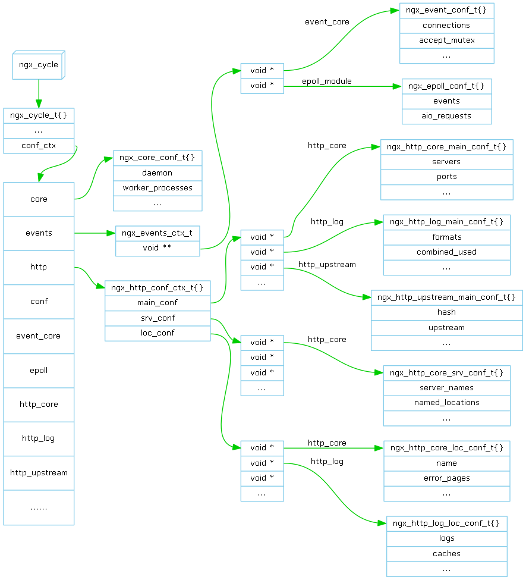

#nginx.confdaemon off ;worker_processes 1 ;events {worker_connections 1024 ; }http {include mime.types ;default_type application/octet-stream ;server {listen 8000 ;server_name localhost ;location / {root html ;index index.html index.htm ; } } }
#mime.typestypes {text/html html htm shtml ;text/css css ;image/jpeg jpeg jpg ; }
指令名(Directive) 是上面
指令由一个指令名和若干个指令参数组成并以分号或大括号结束，例如daemon off 和 http。带有大括号的指令称为块(block)指令。
配置文件可以包含其它配置文件（include）。
配置文件中的指令都对应一个ngx_command_t数据结构。称该ngx_command_t为配置命令。
以下表示该命令有效范围：
Nginx的配置实际上是配置各个模块，所以配置文件中的指令由它所配置的模块所处理。即模块管理着配置命令(ngx_command_t)。模块数据结构ngx_module_t的 commands 是配置命令数组，包含了该模块支持的所有配置命令。
以上的结构体称之为配置结构。配置结构中的各个域称之为配置域。
ngx_core_conf_t 是core_module的配置结构，ngx_event_conf_t是event_core_module的，ngx_epoll_conf_t是epoll_module的。

配置结构由ngx_cycle_t的conf_ctx所管理(如上图)。conf_ctx指向一个void指针数组(下文简称V1数组)，该数组大小为module数量。
上图结构中共有四层，所以conf_ctx被定义为一个四层指针(void ****conf_ctx)。我个人认为此法费解，建议定义为void**conf_ctx表示conf_ctx指向一个void指针数组，其余层次用强制类型转换。
由conf_ctx所管理的配置结构可分为三种管理方式：
epoll_module的配置结构 ngx_epoll_conf_t的指针可以如下得到：
L2_ctx = ngx_cycle->conf_ctx[ngx_events_module.index];
L3_ctx = *L2_ctx;
(ngx_epoll_conf_t*) L3_ctx[ngx_epoll_module.ctx_index];
http_core_module的配置结构 ngx_http_core_main_conf_t的指针可以如下得到：
L2_ctx = ngx_cycle->conf_ctx[ngx_http_module.index];
L3_ctx = L2_ctx[NGX_HTTP_MAIN_CONF_OFFSET];
(ngx_http_core_main_conf_t*) L3_ctx[ngx_http_core_module.ctx_index];
http_core_module的配置结构 ngx_http_core_srv_conf_t的指针可以如下得到：
L2_ctx = ngx_cycle->conf_ctx[ngx_http_module.index];
L3_ctx = L2_ctx[NGX_HTTP_MAIN_SRV_OFFSET];
(ngx_http_core_srv_conf_t*) L3_ctx[ngx_http_core_module.ctx_index];
配置过程如下(入口函数是ngx_init_cycle，关键函数是ngx_conf_parse)：
先从文件读取字符填满缓冲区，再从缓冲区解析所有的token，无法解析为token的剩余字符移到缓冲区的头部，再从文件读字符填满缓冲区。 如此循环直到遇到分号，大括号或者结尾。第一个token是指令名，存入ngx_conf_t的name域，其余的token是指令参数，存入args域。
遇到include指令，打开新配置文件，保存老配置文件句柄(ngx_conf_t::conf_file)，解析新配置文件，恢复老配置文件句柄
配置过程是从ngx_init_cycle函数开始的，上下文ngx_conf_t是该函数的一个局部变量conf，它的指针被传入ngx_conf_parse。
conf被初始为： ctx指向ngx_cycle->conf_ctx， module_type 为CORE， cmd_type 为 MAIN。
下面分别分析读取不同的指令后，上下文切换情况：
不切换上下文
在set回调函数ngx_events_block中切换上下文，切换为：
conf->ctx指向ngx_cycle->conf_ctx[ngx_events_module.index]所指向的void**
module_type 设为 EVENT， cmd_type 设为 NGX_EVENT_CONF
ngx_events_block返回之前上下文恢复
在set回调函数ngx_http_block中切换上下文，切换为：
conf->ctx指向ngx_cycle->conf_ctx[ngx_http_module.index]所指向的ngx_http_conf_ctx_t
module_type 设为 HTTP， cmd_type 设为 NGX_HTTP_MAIN_CONF
ngx_http_block返回之前上下文恢复
在set回调函数ngx_core_server中切换上下文，切换为：
conf->ctx指向新分配的ngx_http_conf_ctx_t
module_type 设为 HTTP， cmd_type 设为 NGX_HTTP_SRV_CONF
ngx_core_server返回之前上下文恢复
在set回调函数ngx_core_location中切换上下文，切换为：
conf->ctx指向新分配的ngx_http_conf_ctx_t
module_type 设为 HTTP， cmd_type 设为 NGX_HTTP_LOC_CONF
ngx_core_location返回之前上下文恢复
切换上下文实际上是利用运行时栈空间，切换ngx_conf_t。下面的代码片段说明如何切换：
static char * ngx_events_block(ngx_conf_t *cf, ngx_command_t *cmd, void *conf)
{
ngx_conf_t saved_conf;
saved_conf = *cf;
cf->ctx = …
cf->module_type = NGX_EVENT_MODULE;
cf->cmd_type = NGX_EVENT_CONF;
rv = ngx_conf_parse(cf, NULL);
*cf = saved_conf;
return rv;
}
通过ngx_conf_t::ctx、ngx_command_t::type、ngx_command_t::conf、ngx_command_t::offset这四个信息找出配置域的地址。 解析参数后设入即可。
ngx_command_t::type 为DIRECT
ngx_conf_t::ctx指向第一层(void*指针数组V1)，ngx_module_t::index是第一层的index。
由第一层指针和ngx_module_t::index，便可定位出第二层（配置结构指针），ngx_command_t::offset是第二层的偏移。
由第二层指针和ngx_command_t::offset，便可定位出配置域。
ngx_conf_t::ctx指向第二层（void*指针数组），ngx_command_t::conf是第二层的index。
由第二层指针和ngx_command_t::conf，便可定位出第三层（void*指针数组），ngx_module_t::ctx_index是第三层的index。
由第三层指针和ngx_module_t:ctx_index，便可定位出第四层（配置结构指针），ngx_command_t::offset是第四层的偏移。
由第四层指针和ngx_command_t::offset便可定位出配置域。
ngx_command_t::set函数的conf参数指向配置结构。
参考 Nginx HTTP Core
https://github.com/lingjf/nginx_analyse/tree/master/prototype/nginx_configure
Prototype删除了和进程模型不相关的功能，以及出错处理等代码。
https://github.com/lingjf/nginx_analyse/tree/master/doc/05CN_Nginx_Module_Model.html
Ling Jianfa lingjf@gmail.com https://github.com/lingjf